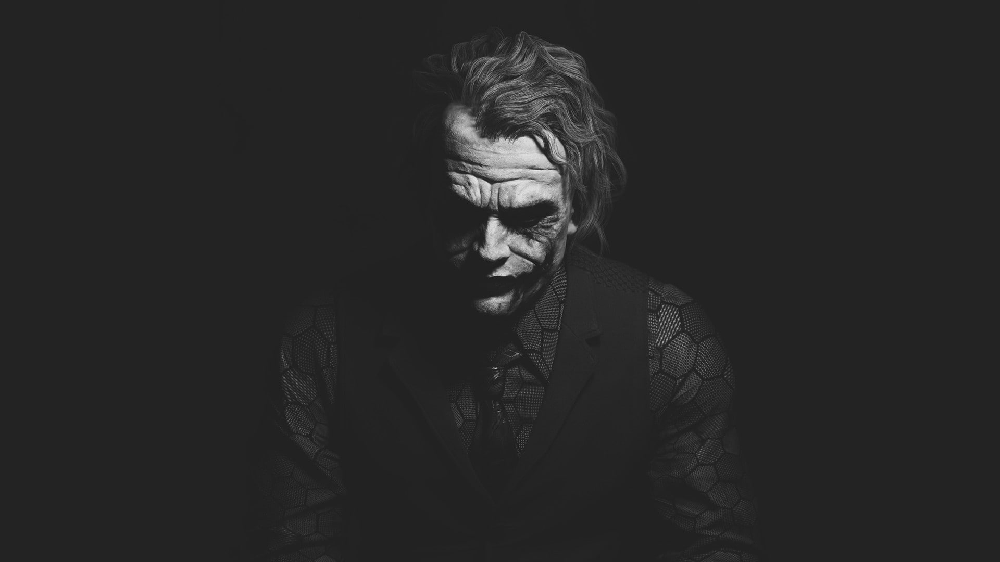

Forever alone in a crowd, failed comedian Arthur Fleck seeks connection as he walks the streets of Gotham City.
Arthur wears two masks -- the one he paints for his day job as a clown, and the guise he projects in a futile attempt to feel like he's part of the world around him.
Isolated, bullied and disregarded by society, Fleck begins a slow descent into madness as he transforms into the criminal mastermind known as the Joker.
